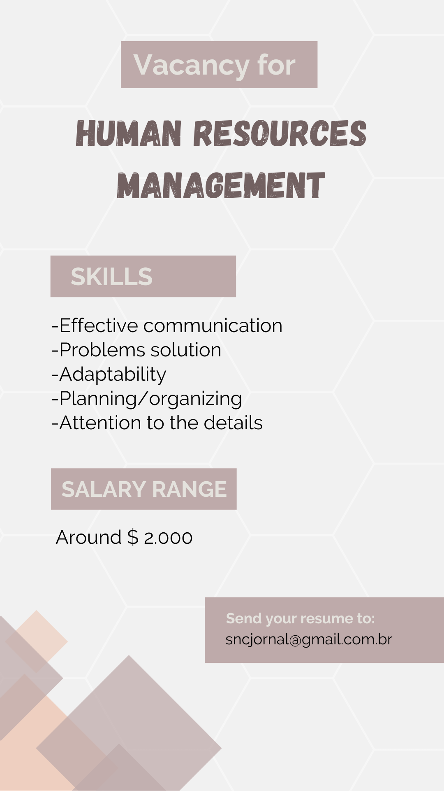

In this activity, we choose the character Jean Valjean from the book "Les Miserables" and we point out your softs and hards skills. With it, we thought in a job opportunity for him, related with his abilities.
With this activity we concluded that with Valjean's characteristics, he could a big opportunity to work on the human resources management area, because his communication skill is extremely important on any desktop because avoid misunderstandings and produces a more positive relationship. Furthermore, Jean has a lot of empathy wich is great for any professional because he shows concern for the well-being of others and establishes more productive relationships.
